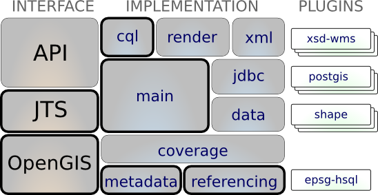

CQL¶
The gt-cql module a human readable “Contextual Query Language” for writing filter expressions for working with geospatial information.
CQL was originally known as Common Query Language (so you will find lots of examples that still refer to this name). The standard comes out of library science and was picked up by the OGC when they were implementing their catalog server specification.
For our purposes it provides a great human readable way to expression Filter similar to an SQL “where clause”. Indeed we have our own extension that allows you to represent the full range of GeoTools Filter and Expression ideas using simple text strings.
References
- http://en.wikipedia.org/wiki/Contextual_Query_Language
- http://www.opengeospatial.org/standards/specifications/catalog
Maven:
<dependency>
<groupId>org.geotools</groupId>
<artifactId>gt-cql</artifactId>
<version>${geotools.version}</version>
</dependency>
Contents